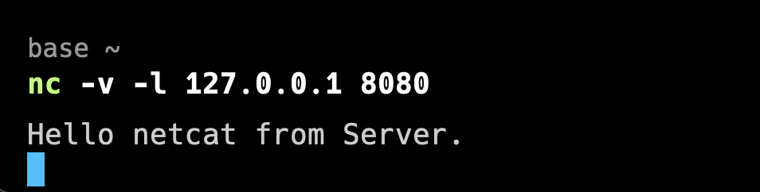
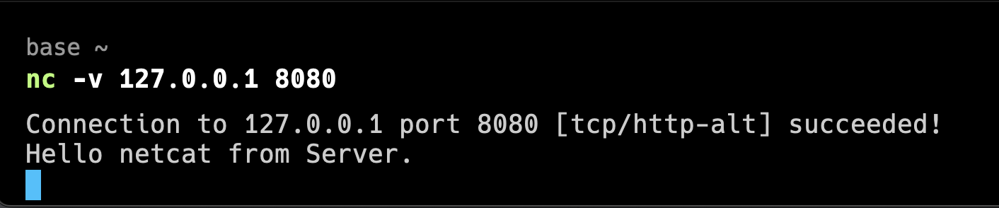

使用netcat调试TCP/UDP
文章目录
前言
最近开发用到了 socket ，然后开发好了之后，会按照一定的规则发送数据，但是客户端还没开发。
这时候我想要连上 socket 去调试，看看都发了什么，有没有按照规则发送数据。却由于客户端没有开发好却没法调试。
经过一番查找，找到了 netcat(使用的命令是nc) ， 它可以用来连接 TCP ，恰好能满足我的需要，这样就非常方便，而不用等到客户端开发好了，才能调试。
使用
netcat 是一个命令行工具，可以用来建立 TCP/UDP 的连接，或者监听连接。
也就是我们可以它来创建 TCP/UDP 的客户端或者服务端。
来看下常用的参数
| 参数 | 作用 |
|---|---|
| -v | verbose 打印详细日志 |
| -l | 监听连接 |
| -4 | 使用 IPv4 |
| -6 | 使用 IPv6 |
服务端
由于这里没有写好的服务端，所以我们使用 netcat 来监听 8080 端口，充当一下服务端
|
|
执行完之后就监听了本机的 8080 端口，这时候就在等待客户端的连接
客户端
|
|
输入完上面的指令，紧接着就会输出连接成功的提示，如下所示
|
|
这时候回到服务端，就可以开始往客户端发送数据了，我们发送一个 Hello netcat from server 如下所示

客户端就会收到来自服务端的消息

当然客户端也可以给服务端发送消息，这其实就是一个简单的聊天软件了。
总结
今天讲了使用 netcat 调试 TCP 的小技巧。
netcat 还有许多其他的功能，它常常用于端口扫描，传输文件，感兴趣可以自己查阅资料，试试。
参考
Linux基础 | nc 网络命令，通过TCP和UDP在两台主机间建立连接传递消息、文件_Lan.W 的博客-CSDN博客